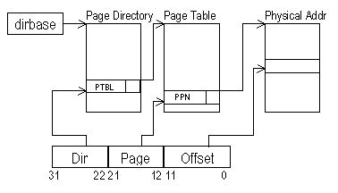

Virtual memory
Problem 1.
Consider a virtual memory system that uses a single-level page map
to translate virtual addresses into physical addresses. Each of the
questions below asks you to consider what happens when one of the
design parameters of the original system is changed.
-
 If the physical memory size (in bytes) is doubled, how does the
number of bits in each entry of the page table change?
If the physical memory size (in bytes) is doubled, how does the
number of bits in each entry of the page table change?
-
If the physical memory size (in bytes) is doubled, how does the
number of entries in the page map change?
-
If the virtual memory size (in bytes) is doubled, how does the
number of bits in each entry of the page table change?
-
If the virtual memory size (in bytes) is doubled, how does the
number of entries in the page map change?
-
If the page size (in bytes) is doubled, how does the number of
bits in each entry of the page table change?
-
If the page size (in bytes) is doubled, how does the number of
entries in the page map change?
-
The following table shows the first 8 entries in the page map.
Recall that the valid bit is 1 if the page is resident in physical
memory and 0 if the page is on disk or hasn't been allocated.
| Virtual page | Valid bit | Physical page |
| 0 | 0 | 7 |
| 1 | 1 | 9 |
| 2 | 0 | 3 |
| 3 | 1 | 2 |
| 4 | 1 | 5 |
| 5 | 0 | 5 |
| 6 | 0 | 4 |
| 7 | 1 | 1 |
If there are 1024 (210) bytes per page, what is the
physical address corresponding to the decimal virtual address 3956?
Problem 2.
A particular 32-bit microprocessor includes support for paged virtual
memory addressing with 2
12 byte pages. The mapping of virtual to
physical addresses requires two translation steps:
- The most significant 10 bits of the virtual address (the Dir
field) are multiplied by 4 and appended to the 20 most significant
bits of the dirbase (directory base) register to get the address in
main memory of a page directory entry. Each entry in the page
directory is a 32-bit record composed of a 20-bit PTBL field and
various control bits (Present, Dirty, Read-only, etc.).
- The bits of the Page field (virtual address bits 21 to 12) are
multiplied by 4 and appended to the PTBL field to form the page-table
address. This page table address references a 32-bit page table entry.
Each page table entry is composed of a 20-bit physical page number
(PPN) and a series of control bits.
All page-table entries and the page directory are stored in main
memory. The results of these translations are cached in a
fully-associative translation look-aside buffer (TLB) with a total of 64
entries, and a LRU replacement strategy is used on TLB misses.

-
Given a computer system with 227 bytes of physical memory that
uses the virtual-to-physical address translation scheme described, how
many pages of physical memory are there?
-
How many memory pages does the Page Directory occupy?
-
What is the approximate maximum size for a process's working
set that still achieves a 100% TLB hit rate?
-
How large must the tag field of the TLB be?
-
A control bit, C, in each page table entry determines if memory
references to that page are cacheable. In order to support this
feature, which of the following statements concerning the interaction
between virtual-to-physical address translations and caching must be
true?
- The cache tags must contain physical addresses
- Each memory access requires a virtual-address translation to take
place in parallel with the cache access
- The status of the cacheable bit, C, needs only to be considered on a
cache miss
- Page table entries with their dirty bit set should clear their cacheable bit
- All of the above
Problem 3.
Consider two possible page-replacement strategies: LRU (the least
recently used page is replaced) and FIFO (the page that has been in
the memory longest is replaced). The merit of a page-replacement
strategy is judged by its hit ratio.
Assume that, after space has been reserved for the page table, the
interrupt service routines, and the operating-system kernel, there is
only sufficient room left in the main memory for
four
user-program pages. Assume also that initially virtual pages 1, 2, 3,
and 4 of the user program are brought into physical memory in that
order.
-
For each of the two strategies, what pages will be in the memory
at the end of the following sequence of virtual page accesses? Read
the sequence from left to right: (6, 3, 2, 8, 4).
-
Which (if either) replacement strategy will work best when the
machine accesses pages in the following (stack) order: (3, 4, 5, 6,
7, 6, 5, 4, 3, 4, 5, 6, 7, 6, ...)?
-
Which (if either) replacement strategy will work best when the
machine accesses pages in the following (repeated sequence) order: (3,
4, 5, 6, 7, 3, 4, 5, 6, 7, ...).
-
Which (if either) replacement strategy will work best when the
machine accesses pages in a randomly selected order, such as (3, 4,
2, 8, 7, 2, 5, 6, 3, 4, 8, ...).
Problem 4.
A paged memory with a one-level page table has the following
parameters: The pages are 2
P bytes long; virtual addresses
are V bits long, organized as follows:
| virtual page number | offset in page |
The page-table starts at physical address PTBL; and each page-table
entry is a 4-byte longword, so that, given a virtual address, the
relevant page-table entry can be found at PTBL + (page number)*4.
Answer the following in terms of the parameters P and V:
-
How many bits long is the "offset in page" field?
-
How many bits long is the "virtual page number" field?
-
How many entries does the page table have, and what is the
highest address occupied by a page-table entry?
-
How many pages long is the page table?
-
What is the smallest value of P such that the
page table fits into one page?
-
What relationships, if any, must hold between P, V, and the
size of physical memory?
Problem 5.
-
If virtual addresses are V bits long, physical addresses are
A bits long, the page size is 2P bytes, and a one-level page
table is used, give an expression for the size of the page table.
Problem 6.
Adverbs Unlimited has recently added a new product, the VIRTUALLY
to the product line introduced in an earlier tutorial problem. The
VIRTUALLY has a fully-associative cache with 256 entries and a block size
of 1,
2
20 bytes of physical memory, 16-bit virtual addresses, and
a 2
6-entry page map. The VIRTUALLY will be used to support
multiuser time-sharing. The page map holds the address translation for
a single (current) process and must be reloaded (by the kernel) at
each process switch. The cache is located between the page map and
main memory.
-
Which virtual address lines are used to form the index to the
page map?
-
Can the operation of the cache and page-map be overlapped?
Explain in a single sentence.
-
Under what circumstances, if any, must the cache be invalidated
(that is, its entries marked as invalid)?
Problem 7.
-
Program A consists of 1000 consecutive ADD instructions, while
program B consists of a loop that executes a single ADD instruction
1000 times. You run both programs on a certain machine and find that
program B consistently executes faster. Give two plausible
explanations.